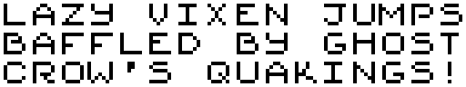

About
Pineberry Fox is an independent game developer focused on making small experiences for retro consoles.
Pineberry Fox is an independent game developer focused on making small experiences for retro consoles.
I heard you like 15-puzzles, so I put some 15-puzzles in your 15-puzzle.
13 July 2023
This game was created over the course of a few days for the Mini Jam. It is freely available for the Nintendo Game Boy as well as for the Sega Game Gear and Sega Master System at itch.io.
The game is also available under an MIT license on GitHub.
This game is not licensed or endorsed by Nintendo, nor by Sega.
Keep the blocks away from the top!
15 January 2023
The blocks will fall and they won't stop falling until they've filled the entire well. Keep your field clean to stay alive.
Play alone or with a friend in this heart-pounding puzzle where a single mistake can quickly spiral out of control! But keep calm and nothing will ever stand in your way.
Choose your music from one of three songs and challenge the high scores!
Download the game for free at itch.io and also get access to digital editions of the box and manual.
This game is not licensed or endorsed by Nintendo.
The 8x8 pixel font used in Animalia Dreamland. It is available as a PNG image or as a TTF file.
08 July 2022
Download the font for free!
This work is licensed under a
Creative
Commons Attribution 4.0 International License.
A brand new game for the Nintendo Entertainment System that fits on just two 8-kibibyte ROM chips.
06 June 2022
Trapped in a dream, unable to awaken, you find yourself in the body of an animal. You're a hamster, right? Or maybe a bird? Look around! The world around you is unusual.
You find that the season has no connection to reality: it might be summer one moment and winter the next. Sometimes there's so little gravity that you'll find yourself floating away, while other times you may find you can barely leave the ground. How is your strength? Are you leaping high into the sky?
Discover how the universe behaves and use your abilities to collect all of the crystal shards, or you may never reawaken!
This game contains:
Download the game for free at itch.io and also get access to digital editions of the box and manual. The game itself is also available under an MIT license on GitHub. That edition does not have the box art or manual.
This game is not licensed or endorsed by Nintendo.